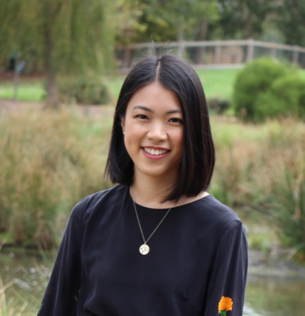
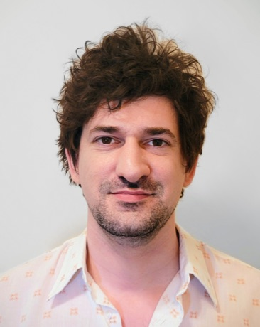
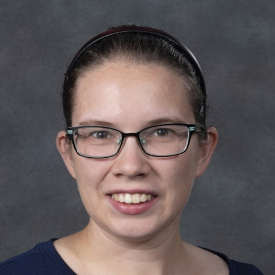
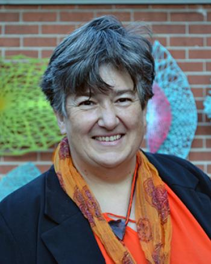
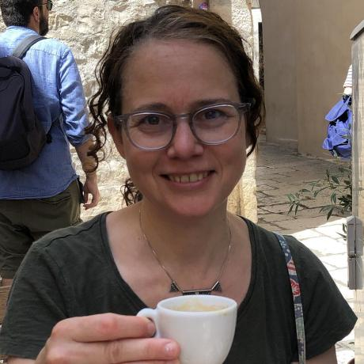
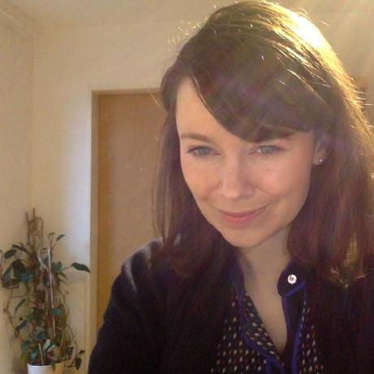

About
Workshop Motivation
Declarative, modular and compositional approaches to the specification of visualizations—otherwise known as graphical or visualization grammars—often claim Wilkinson’s Grammar of Graphics as motivation, inspiration, or foundation. Despite the shared intellectual lineage, visualization grammars encompass a broad array of different abstractions, primitives, and compositional strategies, along with a diversity of target users and usage scenarios.
The design goals and implementation sophistication of graphical grammars also vary greatly. The popularity of open-source visualization grammars such as ggplot2, Vega-Lite, and Observable Plot amongst different user bases, coupled with differences in their approaches to operationalizing Wilkinson’s Grammar of Graphics, gives rise to questions about what makes a grammar system successful and how evaluation methods can reflect multi-faceted success criteria.
Our current conceptualization and evaluation of grammar-based approaches lacks comprehensive integration of these differences and nuances. Existing commentary is fragmented across multiple research and practitioner communities—spanning visualization, statistical graphics, and programming languages research—making systematic review difficult.
Workshop Goals
This workshop aims to seek a unified view of the diverse application contexts, functional goals, and design philosophies embedded in the proliferation of grammar-based visualization tools. While IEEE VIS regularly features papers on individual visualization systems and grammars, it rarely provides structured opportunities for cross-system comparison, meta-theoretical reflection, community consensus building, and practitioner perspectives.
Intellectual Integration — The field lacks comparative frameworks for understanding similarities, differences, and complementarity across grammar systems. We will examine functional requirements and features of graphical grammars beyond narrow evaluation criteria such as cognitive dimensions of notation.
Bridging Theory and Practice — Many practitioners struggle to choose between grammar systems or adapt them for novel visualization challenges. We hope to develop practical guidance for both tool builders and users, and to explore issues of learnability and adoption, including opportunities for natural language interfaces to lower the barrier to entry.
Community Building — Bringing together researchers working on different grammar systems—from ggplot2 extensions to Vega-Lite variants to novel formalisms—will foster cross-pollination across CS and statistics communities and potentially collaborative efforts toward more unified approaches.
The intended outcome is a cohesive interdisciplinary research agenda for grammar-based approaches in visualization research, with plans for follow-up initiatives such as an associated event at JSM 2027 and summary notes published on this website.
Organizers

Cynthia Huang is a postdoctoral researcher at the Social Data Science and AI chair at Ludwig Maximilian University of Munich, Germany, working on data preparation and visualization tools that incorporate statistical, computational, and usability considerations. Her related work includes a novel graph-based workflow grammar for data harmonization, a grammar-based system for extracting canonical tables from spreadsheets, and time-aware grammar of graphics geometries. She was co-chair of WOMBAT 2025 and will be a panellist at the ggplot2 session at JSM 2026. cynthiahqy.com

Matthew Kay is an Associate Professor jointly appointed in Computer Science and Communications Studies at Northwestern University. He works in human-computer interaction and information visualization, with a particular focus on uncertainty visualization and visualization literacy. His work includes a probabilistic grammar of graphics, the widely-used ggdist R package for uncertainty visualization, and studies of how data analysts use visualization grammars in practice. He organized a SIG on visualization grammars at CHI 2021 and co-directs the Midwest Uncertainty Collective.

Susan Vanderplas is an associate professor in Statistics at the University of Nebraska-Lincoln. She researches data visualization, reproducible computing, and machine learning algorithms for forensic pattern matching. Her related work includes the animint package for extending ggplot2 to interactive graphics, and contributions to ggpcp for parallel coordinate plots. srvanderplas.github.io

Heike Hofmann is Professor of Methodology in Observational Data and Exploratory Data Analysis in the Department of Statistics at the University of Nebraska-Lincoln. She is interested in tools and methodology for visualizing large, multivariate, and complex data. She co-founded the Graphics Group, a network of almost 100 members interested in statistical graphics, established in 2002. Her prior work includes numerous ggplot2 and grammar of graphics extensions.

Joyce Robbins is a Senior Lecturer in the Department of Statistics at Columbia University. Her main interests are data visualization and statistics education, with current work focused on mapping the ggplot2 extension package ecosystem. She is an active member of the Statistical Graphics Section of the American Statistical Association and has organized sessions on interactive graphics and ggplot2 extension packages at JSM. github.com/jtr13

Evangeline Reynolds is a data scientist and educator focused on tools that make data analytics more fluid and intuitive. Her ggplot2 extension contributions include ggcirclepack, ggregions, and ggdims. She works in developer relations for the ggplot2 extender community at Posit PBC, co-founded and organizes the ggplot2 extenders club, and developed the ‘easy geom recipes’ and ‘express’ educational resources for ggplot2 extension. github.com/EvaMaeRey